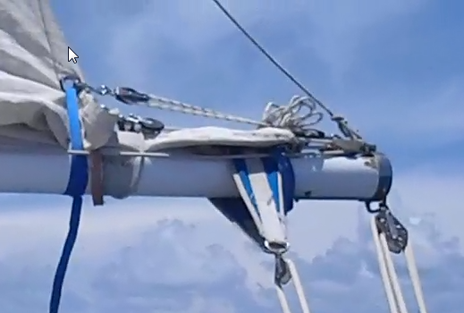

Appendix |
Good ideas we had, softwares we used, hints and tips, comments...
Computing |
Top |
| Navigation | OpenCPN, reads all charts formats, perfect! |
| Tide | JTides |
| Marées dans le Monde | |
| WXTide32 | |
| Astronomy, stars | Stellarium, excellent, good looking, easy to use |
| Cartes du Ciel | |
| Night vision | |
| Weather forecast, fax & GRIBs | getFax, viewFax |
| Weather Wizard (awe.some. I'd even say so if I had not written it myself) | |
| emails |
Airmail client (for SailMail).
You need a modem connected to the SSB. It's also with the modem that we received the faxes. |
| Office suite | Open Office (Text, spreadsheets, presentations, etc) |
| Notepad++ | |
Good ideas |
Top |
To improve |
Top |
Documents |
Top |
| Exploring the Marquesas Islands, by Joe Russell. | In English. Very good. It was published 10 years before our trip, and some informations we outdated. But all the data about the anchorages are accurate and remain valid. |
| Charlie's Charts of Polynesia, by Charles & Margo Wood | In English. Very good too. |
| Guide de navigation et de tourisme de la Polynésie française | Exists in French and English. Accurate. Some informations are outdated. There is an up-to-date web site with the same informations (sea-seek). |
| Sea-Seek | In French and English. Up-to-date! We had printed the relevant pages before leaving. |
| Landfalls of Paradise | For our trip, redundant with the previous ones, and less accurate. |
| South Pacific anchorages | For our trip, redundant with the previous ones, and less accurate. |
Comments |
Top |
The - probably - most important thing: If we had had to wait to be 100% ready to leave, we'd probably be still preparing the boat.
The autopilot worked like a Swiss clock during the whole trip.
The watermaker too.
Those two were precious assets.
Kudos also to the radio and the computer.
What we did not use:
Preparing the trip
I had done a program before leaving, a list of the places to see.
For example, there was all the Marquesas islands, the Gambier, the Australs...
After the twenty-five days of the first leg, Corine decided that maybe we were going to stay a bit before leaving again.
Actually, that was a good idea, we had a much better contact with the island and its people.
The stops we did not do, we'll do next time. They can also be used as a plan B, and you can add stops along the way. This is what we did in Tongareva, that would have been too bad to miss it.
In short, having a planning is good - it helps among other things to anticipate the weather for the period of the year - but it must be flexible enough not to be a constraint.
The autopilot, when cruising
Vast topic... Ours worked very well, we did all we could to preserve it. We always set the boat so the pilot's job was
as easy and smooth as possible, even if we were not going as fast as we could have gone.
We did not have this kind of pilots that really steer the boat and know how to anticipate the waves (to some extent),
and there was some times where we had to drive ourselves, specially when there was some sea.
The problem when cruising is a bit different from the one you have when racing, where it is about arriving as soon as possible.
When cruising, you want the crew to feel as good as possible (you can consider the autopilot as a member of the crew...). For that reason, you set the boat so it moves as smoothly and nicely as possible; in those (good) conditions, it is not a problem at all if the leg takes a bit longer than it could...
The swell
Ah what a bummer! In Polynesia, we had swell. Météo-France provides swell predictions with the marine weather
forecasts. The one thing you can be sure of is that it will not happen as predicted.
When a south swell is forecasted, the one you will not have is a south swell. It's too bad that Météo-France does
not publish the parameters and rationale for their prediction (as does the NOAA)..., the problem is far from simple, but having only the
conclusions is somewhat frustrating, specially when they happen not to be right.
Anyway, we had swell, sometimes several swells on top of each other (up to three).
You don't know where it comes from, it can come overnight, and disappear as fast as it appeared.
If anyone understand anything about that, please do let me know! I'd love to know more.
The reefing system.
After trying several systems, we now have a reefing line that goes at through a block at the end of the boom,
goes up through the clew grommet, and is tied around the boom (the feet are free). When reefing,
once the reefing line is tight, we rig a tackle between the clew and the extremity of the boom, and we wrap a strap
through the clew grommet amd around the boom. The goal of the tackle and the strap
is to avoid chafing, and it works, nothing is moving, no chafing happens this way.

The anchoring system, with chain hook and textile.
With the chain-roll at the end of the bowsprit, if the anchorage is bumby, it is not good,
the shocks in the anchor and chain are propagated within the whole boat.
It's damaging the boat, and it comes on your nerves.
The chainplate of the bob-stay has two axis, one on top of the other. The bob-stay is using the top one. The bottom one is used by a textile line of about ten to twelve feet, with a chain hook at one extremity, which can be hooked on the chain of the anchor.
This way, there is slack in the chain betwqeen the chain-roll and the hook,
and it is the bob-stay chainplate that takes all the load of the anchorage. The textile absorbbs very well the possible shocks.
If this isystem is not enough, then it means the anchorage is not good, as it was the case in Omoka (Tongareva).
A possible improvement would be to add a snubber on the line of the hook...
We never had to use more than our main anchor (a 45 lbs CQR). If we had had to stay longer in Taiohae, we would have used a second anchor, aft, to keep facing the swell that sometimes enters the bay.
The manual windlass was good enough for us. To use an electric windlass that is powerfull enough, you have to run the engine when using the windlass... What we do is use the engine to move the boat towards the anchor, and it works. We had a signal system to communicate between the one at the anchor, and the one at the wheel. It worked very well.
The manual windlass also keeps you in good shape.
In Polynesia, it's good to be able to anchor in a lot of water. We never had to anchor in more than fifty feet, but there are also many places where you would anchor in more than sixty five feet of water... If we had had to anchor in such places, we would have taken the textile out of the peak, keeping in mind the tricks mentionned by Moitessier (in the book above).
The navigation
We used OpenCPN and electronic charts, with a GPS.
We had 4 GPS on board.
We also had everything we needed to navigate without electricity, namely, paper charts, a mechanic log, and almanacs, so we could switch any time to celectial navigation. We even had the required tables and almanac to use the lunar distances (this method requires a lot of practice, but it works).
Almanacs had been published before leaving, with some programs written for the occasion.
We often did lines of positions, sun, moon, planets and stars, to stay used to it (it's all about practice, like riding a bike)...
We discovered the stars of the southern hemisphere, which we did not know. We had sky charts, a star finder, and the programs mentionned at the beginning of this document.
We actually did not need the sextant, computer and GPS did not fail..., but we were ready. Dead reckoning was kept in permanence, an electric failure wouldn't have affected our navigation.
Weather forecast
Essential for long legs. When we left San Francisco, cyclones season was not over (NB:
Insurance companies are setting the beginning and end of the cyclones season... Why don't they just mind their own business. Do weather forecasters deal with insurances?), and we carefully stayed away from the Mexican coast, where cyclones possibly appear and disappear at this season.
During the last leg, we had to deal with high and low pressures.
With the SSB and the modem, we were able to receive faxes and GRIB files. We were displaying those heterogenous data with a program written for the occasion, that can superimpose several faxes on a chart, add a GRIB, the boat location and heading, etc, it simplifies a lot the reading of those documents.
This program has been improved during the trip, it turned out to be a big asset. It's available for free on
its site.
This program also provides routing capabilities. Routing can be very useful when cruising.
Even more if the program allows you to avoid wind angles below a given value, and/or wind speeds above another one.
The year of our trip was a Niña year. That was a piece of luck, those phenomenons are - as far as I know - not predictable.
With this Niña it was a cyclone-free year in Polynesia. The year before was a
Niño year, and the cyclone Oli did quite some damage...
This Niña allowed us to stay longer in Polynesia, and that was good.
The dodger
An extra room in the house...
I did not like it much originally, I found it a bit too big for the silhouette of the boat;
we had dropped and furled it. But it quickly came back in place, it's a good shelter during the watches.
And you can also pile quite some mess in it, which we did.
The gas
The stove we have (Force 10, two burners and an oven) works with gas, propane (LPG: Liquid Propane Gas), that's what you have in the US (because the rest is a chemical weapon). And of course, it's incompatible with the rest of the world. In French Polynesia,
you have butane (because the rest is a chemical weapon).
Injectors are different, threads are not the same, a real pain...
You can carry adapters for the threads, injectors for butane (when they exist...).
We just took the option to take enough gas with us. We had a 3 gallon tank, and three 5 gallon ones (which makes a total of 18 gallons). Without restricting ourselves (Corine cooked bread, cakes, preserves...), we used on average ¾ gallon per week. This way we had enough to go from San Francisco to Hawai'i, where we refilled the tanks.
Diesel or kerosene stoves exist. But they need to be pre-heated, which makes them a bit less convenient to use than gas stoves...
Blue jobs, pink jobs...
It's an idea - a concept - we learnt from Jim & Sue Corenman. That means that each crew member has some more specific tasks than the others. When the crew is a couple, it's easy to call those jobs "blue" and "pink".
Examples:
I was usually taking care of whatever was needed at sea, Corine was taking over when we arrived somewhere. And it worked very well like that.
Heaving to, lying ahull
We had once to lie ahull. It was windy, steady force 8, gusting 9. Not a storm, but no vacation either. It was during the leg Hawai'i - Drakes Bay, a small low pressure was in our south. We saw it coming, we were heading north to put as much distance as possible between its center and us. We were carrying only the staysail, the wind was still increasing, and not to blow out the staysail - brand new - we decided to set the storm staysail, smaller and stronger.
Actually, after having dropped the staysail - we were then lying ahull - and before hoisting its replacement, we rapidly saw that the behavior of the boat was cooler and more relaxing. As a result, the storm staysail remained in its bag.
The helm was tighted to leeward, we took shelter inside and cooked some pancakes, relaxed, that was actually pretty cool. We put back to sail about eight hours later, wind had shifted as expected, barometer was rising, we were downwind..., all was OK.
Moitessier enhances that a boat heaving to or lying ahull is like a sleeping boat..., and that's absolutely right.
The teaching we get out of that is that it's important not to hesitate to heave to or lie ahull, when the crew begins to feel tired. The mood of the troops is quickly rising, whatever the outside consitions are.
During the time we spent lying ahull, the wind was pushing us backwards, it was blowing from the east (and we intended to go east). But at 1½ knot, that was allright. Once again, we were not racing, the main goal was the comfort of the crew, we were not trying to arrive ahead of the other guy...
Noises
Knowing your boat, it's also knowing all the noises it can make. An unknown noise triggers attention.
Noises are different outside and inside, knowing what they mean provides a better sleep...
There is also something we hesitated to discuss, we did not dare, we were afraid to be seen as a wacko.
It's the noises that put imagination at work. We clearly had several times the impression to hear a conversation,
like behind a wall or through a bulkhead, unable to understand the words, but intonations were clearly those of a conversation.
We were only two on board, but we several times had to refrain from asking the other "Who were you talking to just now?"...
It's very bizarre; that explains - at least partly - the richness of the legends developed over the centuries by those who go at sea...
The ideal boat
I have taken tons of notes during the trip, about ideas to improve the boat, and the way we sail it.
We've met several other boats, and we discussed their pros and cons.
Multihulls, heavy boats, light boats, modern ones, classics, others...
All those meetings make you think about what the ideal boat should be.
Well, now I think I know: the ideal boat is the one you sail on. You know it, what to expect from it, what its limits are,
what you can ask, what works, what does not... Your boat becomes ideal when the crew fits the boat, that is the trick.
Learning
There are things you know before leaving, there are things you learn on the way.
We learnt a lot along the way.
When it comes down to technical stuff, there are things to say. When there is a technical problem, the question is not to compromize
what works to repair what failed. Knowing all the technical aspects of the boat you're sailing is a huge asset.
That kind of skill encompasses the engine, the rig, the sails, the LPG, the electronics, the electrical system, the fridge, ...you name it.
If you know all this, whenever something happens, you know:
The budget
Approximatly, this is what we spent:
| Mooring fees Tahiti & Bora-Bora | $ 350.00 |
| Mooring fees Hawai'i | $ 750.00 |
| Admin fees (Visas, taxes, etc) | $ 500.00 |
| Car rental | $ 1 500.00 |
| Fuel (Gas, Diesel, LPG) | $ 500.00 |
| Boat supplies (charts, chainplates, new staysail, electronics, small supplies, new fuel tank, etc) | $ 3 000.00 |
| Misc (food, restaurants, souvenirs, bike rental, etc) | $ 13 400.00 |
| Total | $ 20 000.00 |
And the rest...
- We put during the trip 175 hours on the engine. This number includes all the times the engine was not in gear, just to reload the batteries. We used about 80 gallons of diesel during the trip. For about 10,000 nautical miles, that brings us to 125 nautical miles (~145 statute miles) a gallon. Not bad ;0).
- We were exceptionnaly over-powered (and that was on purpose). We were sometimes under-powered. It just does not make sense
to over-power a boat like ours. It won't surf anyway. It's a take-it-easy boat.
- For the watches, we did it "on-demand". The one on deck wakes up the one below when he/she cannot handle it anymore,
or when a maneuvre is necessary. We ended up this way with watches between two and six hours.
We used to sleep between four and six hours a day. It's not much, but that worked like that.
We never locked the boat, even when we were not on board. We never were nervous, and we never heard of anyone who had been stolen anything.
Contact |
Top |